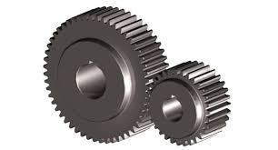
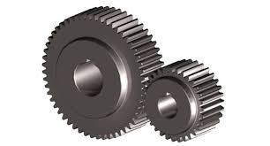

הסבר כללי
מה זה Spur Gear? Spur gear (בעברית: גלגל שיניים ישר) הוא אחד מסוגי גלגלי השיניים הכי נפוצים בעולם המכני. זה גלגל שיניים שבו השיניים ישרות ומקבילות לציר הסיבוב. כלומר, אם תסתכל על הגלגל מהצד, תראה שהשיניים “עולות” ישר למעלה ולא באלכסון. גלגל שיניים כזה עובד יחד עם גלגל נוסף: השיניים של שני הגלגלים נכנסות אחת בתוך השנייה, וכך סיבוב של גלגל אחד גורם לגלגל השני להסתובב. למה משתמשים בגלגלי שיניים בכלל? המטרה העיקרית של מערכת גלגלי שיניים היא להעביר תנועה סיבובית וכוח ממקום אחד לאחר, תוך שליטה על: מהירות סיבוב (RPM / ω) מומנט (Torque, T) כיוון הסיבוב כיוון העברת הכוח (בין צירים שונים אם מדובר בסוגים אחרים) דיוק והחזרתיות (תנועה בלי החלקה, בניגוד לרצועה) ב-Spur gears הצירים של שני הגלגלים חייבים להיות מקבילים, והם עובדים מצוין בתמסורות פשוטות. איך Spur Gear עובד בפועל? כששני גלגלי שיניים ישרים משתלבים, בכל רגע רק חלק מהשן במגע עם השן שמולה. המגע מתחיל בנקודה אחת, מתפתח לאורך הקו, ואז מסתיים — וכל זה חוזר כל הזמן. בגלל שהשיניים ישרות, הכוח שעובר ביניהם הוא כמעט כולו כוח משיקי (Tangential force) שגורם לסיבוב. בנוסף יש גם כוח רדיאלי (Radial force) שדוחף את הגלגלים אחד מהשני. ⚠️ בגלגלי שיניים ישרים אין כמעט כוח צירי (Axial) כי השיניים לא אלכסוניות — וזה יתרון, כי לא צריך להתמודד עם דחיפה לאורך הציר כמו בגלגלי שיניים הליקליים (Helical).
תמונות והמחשות


 
